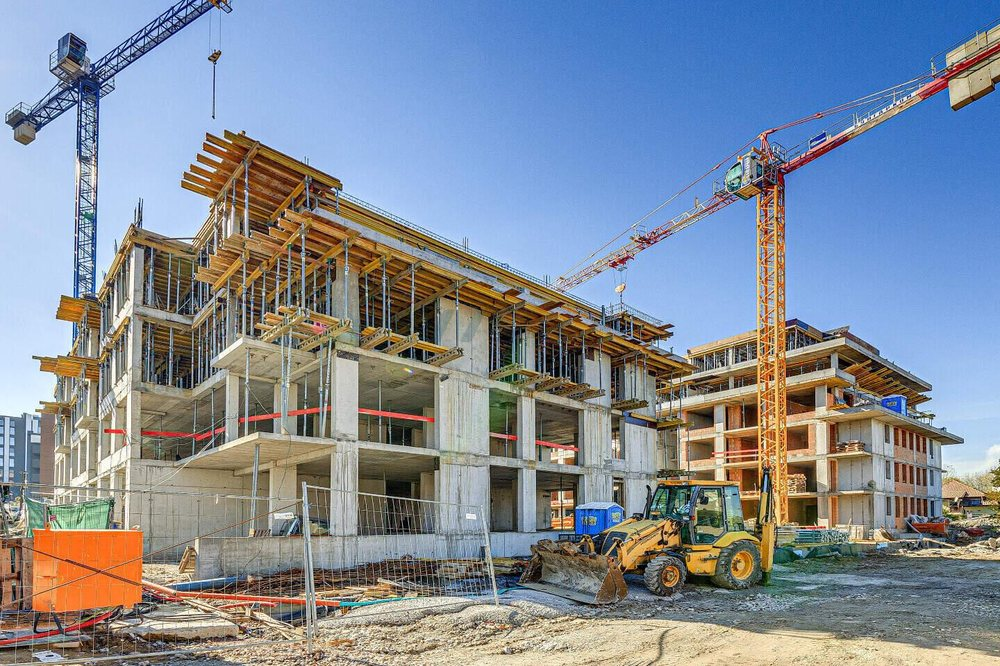

Plan responsibly
Confirm scope, resources and site requirements before work begins.
Mahirex Constructions Private Limited
Integrated construction, engineering and infrastructure support, brought together through practical planning, coordinated delivery and quality-focused execution.
WHO WE ARE
A growing construction company based in Sindhanur, Raichur District, Karnataka.
MRCPL supports infrastructure and building projects as a subcontractor, bringing practical local knowledge, coordinated resources and a commitment to quality workmanship and reliable execution.
Discover MRCPL
A DEPENDABLE SUBCONTRACTOR
Based in Sindhanur, MRCPL understands the local working environment and brings practical resources to each package: labour, machinery, site supervision and straightforward coordination.
Learn about MRCPLConfirm scope, resources and site requirements before work begins.
Support orderly, quality-conscious execution and site coordination.
Keep communication and billing clear throughout the engagement.
PROJECT EXPERIENCE
A snapshot of the work experience and opportunities shared by MRCPL. Project references and package details can be discussed directly.

CC road and drain works in Sindhanur Taluk, Raichur District.

Earthwork and civil work packages across Raichur District, supported by local labour and site resources.

MRCPL is interested in railway subcontract packages, including Jamalapur–Gurugunta, subject to award and agreed scope.
LOCAL EXPERIENCE
MRCPL’s experience includes road, drainage, earthwork and civil works in Sindhanur Taluk and across Raichur District.
Company registration, PAN/GST, Udyam/MSME, EPF and ESI documents are available on request.
Request company informationLET’S DISCUSS YOUR PACKAGE
Share the work scope, location and resource requirements with our team.